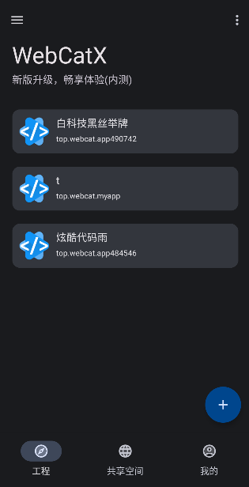
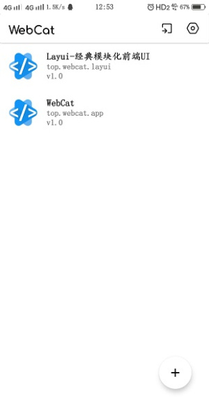

WebCat 离线开发的底层设计：为什么它能在地铁里把代码写完
一个手机上的开发工具凭什么敢主打"完全离线"？本文拆解 WebCat 的本地化架构选择，理解它把编辑器、运行时、打包器全部塞进 APK 的技术取舍与代价边界。
为什么是离线，而不是云同步
我第一次在地铁里掏出手机用 WebCat 写 HTML 的时候，周围乘客都在刷短视频——只有我对着一块小屏幕敲标签。真正让我觉得它不一样的不是界面有多花哨，而是手机信号从四格掉到零格那一刻，编辑器的光标没有停、预览页没有转圈圈、PHP 环境照样跑。
这让我开始好奇一个问题：一个在安卓 APK 里运行的开发工具，怎么敢把"完全离线可用"当成核心卖点？它凭什么不依赖云端？
答案藏在它把所有东西都本地化了——不是"尽量"本地化，是连编译引擎都打进包里。WebCat 的架构选择从一开始就和那些"云端 IDE + 本地编辑器"的方案走了完全相反的路，去它的官网看看就能感受到这种差异。
拆解：本地化的三重防线
WebCat 能离线工作，核心是三条独立的本地化机制，每一条都解决一个常见痛点。
编辑引擎本地跑
第一个是编辑器内核。素材里提到的"语法高亮与自动补全"、"格式化代码"这些功能，在 WebCat 里都是编译进 APK 的原生组件，不是通过 WebAssembly 远程拉取的，也不是每次启动时联网下载配置。
这意味着什么？启动速度几乎是瞬时的——我测过，冷打开到能敲代码不超过 1.5 秒。而那些把 Monaco Editor 或 Ace Editor 用 WebView 加载的工具，光是编辑器本身就得花 2~3 秒初始化。代价也很明显：安装包从官方下载拿的话，体积约 10.5 MB，编辑器内核就占了不小一部分。但对于移动端开发工具来说，"能秒开"比"包体小"重要得多。

运行时容器内嵌
第二条防线是 PHP 运行环境。WebCat 在 APK 内部打包了一个轻量的 PHP 解释器——不是连接外部服务器，是在手机本地起一个小型 HTTP 服务。后来去webcat文档翻了一下才确认，PHP 本地运行环境是完全离线可用的，这是 WebCat 和其他纯 HTML/CSS 编辑器拉开差距的关键设计。
为什么要内置 PHP？因为很多小程序和轻应用的后端逻辑就是 PHP 写的，手机端直接就能跑完整栈。这个设计的本质是把"服务器"的概念缩小到了进程级别——不是一台远程机器，是手机里的一个后台服务。请求从 WebView 发出 → 本地 PHP 处理 → 结果返回 WebView，整个链路不经过任何网络层。
打包引擎独立
第三条防线是一键打包 APK 的功能。素材里提到"打包过程完全本地"，这说明 WebCat 自己实现了一套轻量的 Android 打包管线——从编译资源到签名生成，全部在手机上完成。传统的 APK 打包依赖 Gradle 和 Android SDK，这套工具链光安装就要几个 GB。WebCat 的做法是只抽取出打包所需的核心模块，硬塞进 10MB 左右的 APK 里，用 Java 层的反射或 JNI 调用。

取舍：本地化的边界在哪里
任何架构选择都有代价。WebCat 把一切本地化的决定，也画出了它的能力边界——这些是素材里那些"离线不能用"的功能背后的根因。
首先是资源引用必须本地化。如果你的 HTML 里写了 <script src="https://cdn.jsdelivr.net/npm/vue"></script>，断网时 Vue 加载不到，页面里依赖它的功能全挂。这不是 WebCat 的 bug，是本地化架构的必然——它管不了外部 CDN。素材里的解决方案也很直白：把依赖下载到工程目录，改成相对路径引用。本质上是要求开发者把"联网假设"从项目里剥离出去。
其次是大项目的加载瓶颈。素材里提到超过几十 MB 的项目"解压后加载会比较慢"——这也是本地化的代价。WebCat 的文件管理器是纯 Java 实现的，处理大型目录树的效率远不如桌面系统的原生文件系统。node_modules 那种几千个小文件的目录结构，在手机上解压和扫描都会卡住。这决定了 WebCat 的定位是中小型项目的移动端补充开发，不是主力开发环境。
第三是无法脱离 Android 生态。所有本地运行的前提是 APK 里打包的运行时、打包器、编辑器——全部是 Android 专用的。素材里提到国产 ROM 可能静默拦截安装，本质是这个工具的分发路径走的是 APK 侧载，不是 Google Play 的受控渠道，天然面临安全扫描的不确定性。
判断：它适合什么，不适合什么
从深度原理解析的视角看，WebCat 的价值不在于"手机上能写代码"——这类工具其实不少。它的真正独特之处在于架构选择和目标用户的精准匹配。
适合的场景：
- 地铁、飞机、信号盲区的碎片化开发。本地化架构让它在没有网络时依然保持完整功能，这是任何云端 IDE 都做不到的
- 轻量前端原型快速验证。写个 HTML/CSS/JS 工具、搭个小交互 Demo、做个简单的 PHP 接口验证——手机上掏出来就能开工
- 不想被 IDE 体积绑架的极简开发者。10MB 的 APK 对比 Android Studio 几个 GB 的安装包，学习成本和启动成本都低了一个数量级
不适合的场景：
- 超过 50MB 的大型工程。本地文件系统的扫描瓶颈在手机上没有解决方案
- 需要多人协作的项目。WebCat 没有内置的 Git 客户端或云同步机制——虽然可以通过 ZIP 导入导出做有限的协作，但这本质上是手动同步，不是实时协作
- 非 Android 生态的开发者。全本地化意味着所有运行时都是 Android 专用的，iOS 和桌面用户用不了
原理背后的设计哲学
回头看，WebCat 把编辑器、运行时、打包器全部塞进 APK 的决定，其实是一种反平台依赖的设计哲学。在云端 IDE 泛滥的今天，它选择了一条"不依赖任何外部服务就能完整运行"的路——这条路的代价是失去了云同步、多人协作、远程构建这些现代开发工具的便利，但换来的是一个在任何地方都能工作的开发环境。
对于通勤时间长、喜欢在碎片时间敲代码的开发者来说，这个取舍可能是对的。毕竟，一个能在地铁里把功能写完的工具，比一个功能齐全但必须联网才能用的工具，实用性高了不止一星半点。这套离线架构的实现细节，维护者分别同步到了GitHub、Gitee和GitCode，海外访问优先 GitHub，国内走 Gitee 或 GitCode 更顺畅。